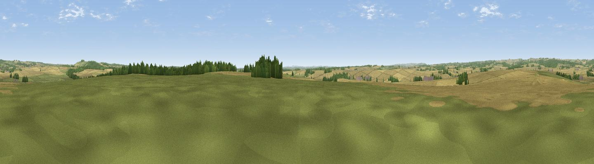

Gussage Hill
#26615 in England · top 35% of its area beats it · near Gussage St AndrewWhere it is
The exact computed spot (ST 99570 13440). Click the marker for map links.
The view, rendered

A 360° render of this exact spot computed from the terrain model, tree cover and land cover — summer colours, afternoon light, calibrated against photographs of famous viewpoints. Real trees, hedges and buildings will differ in detail.
The panorama
Grey silhouette: terrain skyline in each direction (720 bearings, Earth curvature and refraction included). Dashed green: skyline with trees (+15 m) and buildings (+8 m) as obstacles. Blue strip: how far the ground is visible on each bearing.
Where the view opens
Wedge length = distance to the farthest visible ground on that bearing (vegetation-aware). Rings at 10, 25 and 50 km.
What fills the view
68% cropland · 19% grassland · 12% woodland ·
Angular shares of the visible panorama (visual magnitude), not map area. Landscape diversity 0.38 (0–1 Shannon).
Key numbers
More beautiful places nearby
The staircase of upgrades: each row has a higher view potential than everything closer. Driving times are estimates from straight-line distance, calibrated against real road routing — check an actual route before setting out.
| Place | Direction | Drive | Score |
|---|---|---|---|
| Viewpoint near Cranborne | NE · 5 km | ~12 min | 65.0 |
| Trow Down | NNW · 9 km | ~17 min | 67.5 |
| Monk's Down | NW · 10 km | ~19 min | 74.4 |
| Viewpoint near Berwick St John | NW · 10 km | ~20 min | 78.2 |
| Viewpoint near Harman's Cross | S · 32 km | ~49 min | 80.8 |
| Nine Barrow Down | S · 32 km | ~50 min | 81.1 |
| Ballard Down | S · 32 km | ~50 min | 83.2 |
| Viewpoint near Harman's Cross | S · 32 km | ~50 min | 84.1 |
50.92042, -2.00748 · source: osm peak · position refined by local search. Computed location — check access rights before visiting.